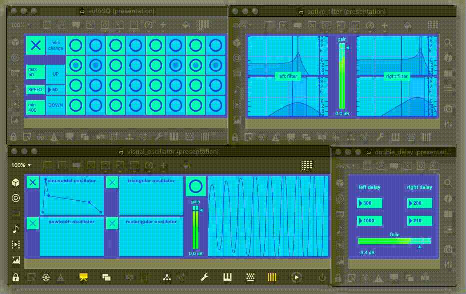
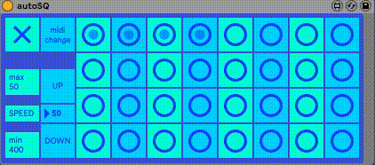
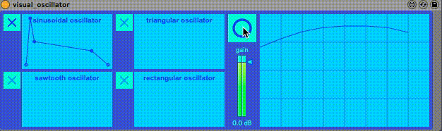
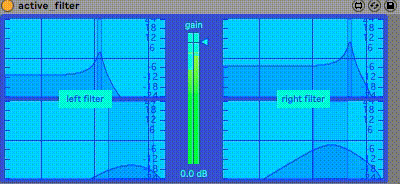
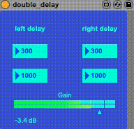

bluesq
ブルーなシーケンサー

autoSQ

sq : ランダムで左右の流れ方が変化
1列目：ランダムに生成したノートパターン
2列目：1列目より1オクターブ高いノートパターン
3列目：階段状に上がるノートパターン
4列目：1列目とは異なるランダムのノートパターン
toggleボタン：sqのオンオフ
→1度再生した後はtoggleをオフにした時のパターンがループされます
Midichange：16小節に1度，自動でsq内のノートパターンを変更
→(buttonを押すこと手動での変更も可能)
UP,DOWN : sqのspeedの変更
visual_oscillator

左側 : 波形を選びADSRを変更可能
→ADSRはtoggleのオンオフの度にリセット
右側 : 波形を表示しており，bungを押すと4パターンの表示変更が可能
active_filter

lowpathfilter : 上側の2つのfilterでresonanceをきかせている
resonancefilter : 下側の2つのfilterでreduxのような効果を出している
左側が左側の音声，右側が右側の音声にfilterをかけており，左右で若干動きが異なる
double_delay

左右で別々にdelayが効いている
それぞれ3パターンのdelayの組み合わせがあり，それぞれが異なる効果を生み出す
AbletonLive / Max for live
©
2020 Keisuke Okazaki